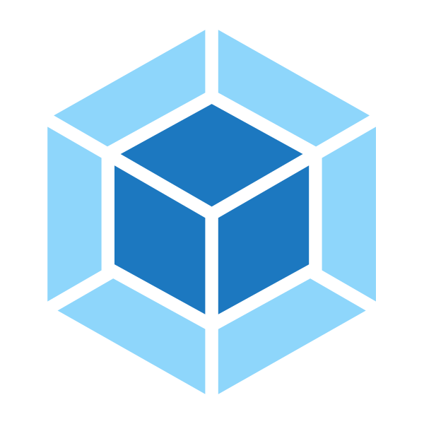
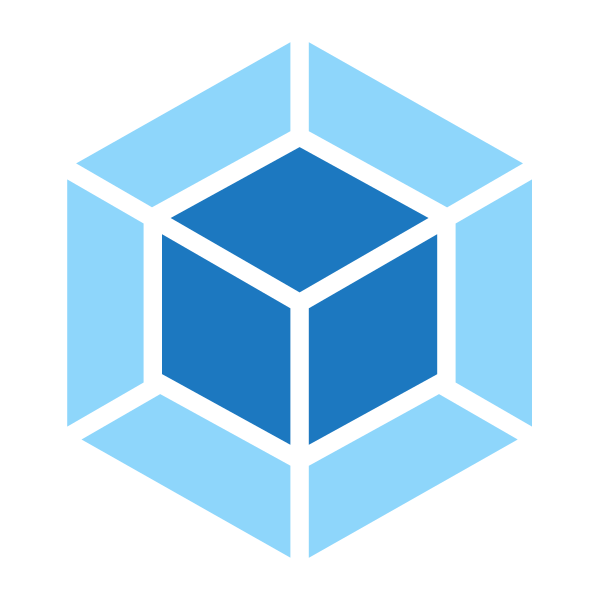

Concepts
At its core, webpack is a static module bundler for modern JavaScript applications. When webpack processes your application, it recursively builds a dependency graph that includes every module your application needs, then packages all of those modules into one or more bundles.
Learn more about JavaScript modules and webpack modules here.
It is incredibly configurable, but to get started you only need to understand four Core Concepts:
- Entry
- Output
- Loaders
- Plugins
This document is intended to give a high-level overview of these concepts, while providing links to detailed concept specific use cases.
Entry
An entry point indicates which module webpack should use to begin building out its internal dependency graph. After entering the entry point, webpack will figure out which other modules and libraries that entry point depends on (directly and indirectly).
Every dependency is then processed and outputted into files called bundles, which we'll discuss more in the next section.
You can specify an entry point (or multiple entry points) by configuring the entry property in the webpack configuration.
Here's the simplest example of an entry configuration:
webpack.config.js
module.exports = {
entry: './path/to/my/entry/file.js'
};
You can configure theentryproperty in various ways depending the needs of your application. Learn more in the entry points section.
Output
The output property tells webpack where to emit the bundles it creates and how to name these files. You can configure this part of the process by specifying an output field in your configuration:
webpack.config.js
const path = require('path');
module.exports = {
entry: './path/to/my/entry/file.js',
output: {
path: path.resolve(__dirname, 'dist'),
filename: 'my-first-webpack.bundle.js'
}
};
In the example above, we use the output.filename and the output.path properties to tell webpack the name of our bundle and where we want it to be emitted to.
You may see the term emitted or emit used throughout our documentation and plugin API. This is a fancy term for 'produced' or 'discharged'.
Theoutputproperty has many more configurable features and if you like to know more about the concepts behind theoutputproperty, you can read more in the concepts section.
Loaders
Loaders enable webpack to process more than just JavaScript files (webpack itself only understands JavaScript). They give you the ability to leverage webpack's bundling capabilities for all kinds of files by converting them to valid modules that webpack can process.
Essentially, webpack loaders transform all types of files into modules that can be included in your application's dependency graph (and eventually a bundle).
Note that the ability toimportany type of module, e.g..cssfiles, is a feature specific to webpack and may not be supported by other bundlers or task runners. We feel this extension of the language is warranted as it allows developers to build a more accurate dependency graph.
At a high level, loaders have two purposes in your webpack configuration:
- The
testproperty identifies which file or files should be transformed. - The
useproperty indicates which loader should be used to do the transforming.
webpack.config.js
const path = require('path');
const config = {
entry: './path/to/my/entry/file.js',
output: {
path: path.resolve(__dirname, 'dist'),
filename: 'my-first-webpack.bundle.js'
},
module: {
rules: [
{ test: /\.txt$/, use: 'raw-loader' }
]
}
};
module.exports = config;
The configuration above has defined a rules property for a single module with two required properties: test and use. This tells webpack's compiler the following:
"Hey webpack compiler, when you come across a path that resolves to a '.txt' file inside of a
require()/importstatement, use theraw-loaderto transform it before you add it to the bundle."
It is important to remember that when defining rules in your webpack config, you are defining them undermodule.rulesand notrules. For your benefit, webpack will 'yell at you' if this is done incorrectly.
There are other, more specific properties to define on loaders that we haven't yet covered.
Plugins
While loaders are used to transform certain types of modules, plugins can be leveraged to perform a wider range of tasks. Plugins range from bundle optimization and minification all the way to defining environment-like variables. The plugin interface is extremely powerful and can be used to tackle a wide variety of tasks.
In order to use a plugin, you need to require() it and add it to the plugins array. Most plugins are customizable through options. Since you can use a plugin multiple times in a config for different purposes, you need to create an instance of it by calling it with the new operator.
webpack.config.js
const HtmlWebpackPlugin = require('html-webpack-plugin'); //installed via npm
const webpack = require('webpack'); //to access built-in plugins
const path = require('path');
const config = {
entry: './path/to/my/entry/file.js',
output: {
path: path.resolve(__dirname, 'dist'),
filename: 'my-first-webpack.bundle.js'
},
module: {
rules: [
{ test: /\.txt$/, use: 'raw-loader' }
]
},
plugins: [
new webpack.optimize.UglifyJsPlugin(),
new HtmlWebpackPlugin({template: './src/index.html'})
]
};
module.exports = config;
There are many plugins that webpack provides out of the box! Check out our list of plugins for more information.
Using plugins in your webpack config is straightforward - however, there are many use cases that are worth further exploration.